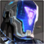

Initiators
Initiators er agentklassen som betyr at agenten har en evne til å gjøre raske hendelser. De kan ha egenskapene til andre klasser, for eksempel være tilpasset for dueller og skytekamper, men samtidig ha egenskaper som kan være nyttige i individuelle situasjoner. Agentene som er under denne klassen er spesielt gode på å få vekk motstandere fra noen posisjoner og angripe dem.
Egenskapen «E» aktiveres etter et sekund og gir en «stun» effekt for motstanderen. Denne effekten gjør slik at motstanderen kan skute bare en gang i sekundet og siktepunktet blir veldig utydelig. Egenskapen kan brukes igjen etter 40 sekunder.
Egenskapen «Q» er en flash som fungerer gjennom vegger og aktiveres saktere enn de andre. Breach kan ha 2 flash og hver av dem koster 250.
Egenskapen «C» er en egenskap som angriper 3 ganger gjennom en vegg. Denne egenskapen kan få en motstander til å gå ut av et trygt sted. Egenskapen koster 200 og kan eie to stykker.
Den ultimative egenskapen er en «E» egenskap men den virker på større arealer og kaster motstanderen opp. Den krever 7 poeng.
Egenskapen «E» er en pil som Sova kan skyte for å finne posisjonen til motstanderne. Hvis Sova skyter pilen og motstanderen kan se den, så blir motstanderen markert på kartet. Pilen blir ødelagt med et skudd, men den brukes vanligvis for å finne ut raskt om det er en motstander på et sted. Pilen gjenopprettes etter 40 sekunder.
Egenskapen «Q» er en pil som tar skade på et område. Hvis du står nærmere pilen når den eksploderer, så får du mer skade. Maksimumskaden er 80. Sova kan eie to piler og hver av dem koster 150.
Egenskapen «C» er en drone som kan fly og markere motstandere på kartet. Effekten varer 3 sekunder. Dronen koster 400 og Sova kan eie bare en drone.
Den ultimative egenskapen er et lyssignal som går gjennom vegger og tar 80 skade og markerer motstanderen på kartet. Den kan brukes 3 ganger før egenskapen er ferdig, og kan brukes for å ødelegge dekorative objekter, eller tårn til andre spillere. Motstandere får også skade av tårnet. Eksempler kan være en vase, killjoy tårn eller en karakter. Lyssignalet krever 8 poeng.
Egenskapen «E» er egenskapen hans som kan finne motstandere gjennom vegger i en viss radius. KAY/O kaster en kniv som finner motstandere rundt den i en 5 meters raduis. Motstanderne blir notert ned på skjermen til alle levende lagkamerater men ikke markert på kartet. De blir markert som «funnet», så KAY/O må selv si hvor han kastet kniven for å gi lagkameratene riktig informasjon. Alle som blir markert kan ikke bruke egenskapene sine på 5 sekunder. Kniven gjenopprettes etter 40 sekunder.
Egenskapen «Q» er en flash granate som fungerer akkurat som i CS: GO og Det er ingenting mer å si egentlig. Venstre museknapp er å kaste den langt, mens høyre museknapp er å kaste den ved siden av deg men den eksploderer nesten med en gang. KAY/O kan eie to flash granater og hver av dem koster 250.
Egenskapen «C» er en granate som kastes på bakken og tar skade hvert 1,5 sekund, og desto lenger til midten av den du står, desto høyere skade blir det på deg. Den koster 200 og man kan eie bare en slik egenskap.
Den ultimative egenskapen er en egenskap som gjør slik at motstanderne på nesten hele kartet kan ikke bruke sine egenskaper, samtidig som dine lagkamerater kan. Hvis KAY/O blir drept mens den ultimative egenskapen fortsatt er i gang, så faller KAY/O ned på bakken og han kan bli reddet av en lagkamerat innen 40 sekunder for å fortsette å spille. KAY/O ser alt foran seg mens han ligger. Han kan også bli drept helt, han har 200 HP når han ligger. Denne egenskapen krever 7 poeng.
Egenskapen «E» er en flash som kastes, kan styres og aktiveres når Skye vil det. Den kan bli ødelagt av motstandere. Man kan maksimalt eie to egenskaper og en egenskap koster 250 mens den andre gjenopprettes hver runde og kan brukes på nytt etter 40 sekunder.
Egenskapen «Q» er en hund som kan styres. Denne hunden brukes for å innsamle informasjon om motstandere. Hvis hunden angrep motstanderen, så får motstanderen 15 skade og en lik «stun» effekt som man får av Breach.
Egenskapen «C» er en egenskap som gjenoppretter liv til alle som står i en viss radius fra Skye. Den kan ikke gjenopprette livene til Skye. Skye kan maksimale gjenopprette 100 HP. Fordelen med denne egenskapen foran Sage er at hvis to lagkamerater har 50 HP og de trenger flere liv, så kan Skye bruke denne egenskapen på begge samtidig og hun bruker egenskapen sin som om hun gjenoppretter liv til bare en person. Altså, en gjenopprettet HP av egenskapen kan bli til 4 gjenopprettet HP hvis hun gjenoppretter liv til alle lagkameratene sine på en gang. Dette betyr altså at Skye kan gjenopprette 400 liv på en runde, hvis alle lagkamerater blir veldig skadet og Skye har denne egenskapen. Den koster 200.
Den ultimative egenskapen er hunder som går til motstanderen av seg selv. Det kan maksimalt slippes ut 3 hunder, og hver av dem kommer til å finne sin nærmeste motstander. Det er mulig å ødelegge disse hundene. Hvis hunden traff motstanderen, så får han samme effekt som av Omen flash og den varer lenger.
Sova
KAY/O
Skye
Breach
